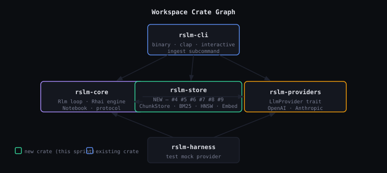
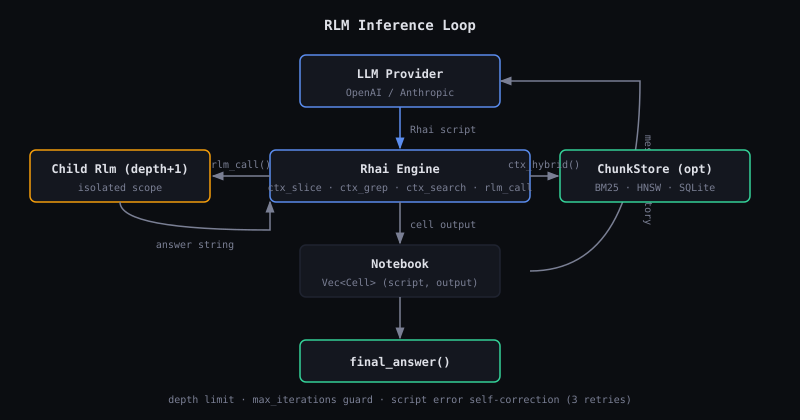

Recursive Language Model inference in Rust — unbounded context via Rhai scripting.
The model never sees raw context. It writes scripts to query it. Recursion handles depth.
rslm implements the RLM inference pattern (Zhang & Khattab, 2025). An LLM is given a Rhai scripting environment instead of raw context. It calls registered functions to slice, grep, and search the context, spawning recursive child instances for sub-questions. The result is effective handling of arbitrarily large contexts without architecture changes to the underlying model.

| Crate | Role | Status |
|---|---|---|
rslm-core |
RLM loop, Rhai engine, Notebook, protocol types | Stable |
rslm-providers |
LlmProvider trait, OpenAI + Anthropic impls |
Stable |
rslm-cli |
Binary: query, interactive, ingest subcommands | Stable |
rslm-store |
ChunkStore, BM25, HNSW, EmbedProvider, RRF | In progress |
rslm-harness |
Mock LlmProvider for tests | Stable |

# Single query with inline context rslm query "What is the main finding?" --context "$(cat paper.txt)" # File-based context rslm query "Summarize section 3" --context-file paper.txt --verbose # With persistent chunk store (hybrid search) rslm ingest --store paper.db --context-file paper.txt rslm query "What methodology was used?" --context-file paper.txt --store paper.db # Anthropic provider rslm query "..." --context "..." --provider anthropic --model claude-sonnet-4-6
| Variable | Default | Purpose |
|---|---|---|
RSLM_PROVIDER | openai | openai or anthropic |
RSLM_MODEL | provider default | model ID override |
OPENAI_API_KEY | — | required for OpenAI provider + embedder |
ANTHROPIC_API_KEY | — | required for Anthropic provider |